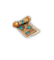

| Spellbook | UnID'd name | Spellbook | UnID'd name | Tile |
|---|---|---|---|---|
| Acid Ball / Rain of Sorrow | brass-bound | Improved Fireball / Invoked Devastation | shimmering |
|
| Acid Bolt | cracked | Invisibility / Veil of the Gods | worn | |
| Bless | thin | Knock / Divine Key | dusty | |
| Burning Hands / Baptism of Fire | laced | Know Alignment | parchment | |
| Calm Monster | tattered | Light | leather-bound | |
| Create Item / Divine Favor | leather | Lightning Ball / Heavenly Fury | iron-bound | |
| Cure Critical Wounds | black | Lightning Bolt / Divine Wrath | heavy | |
| Cure Disease | small | Magic Lock / Seal of the Spheres | gilted | |
| Cure Light Wounds | old | Magic Map / Knowledge of the Ancients | compact | |
| Cure Serious Wounds | dirty | Magic Missile / Minor Punishment | rune-covered | |
| Darkness | ancient | Mystic Shovel / Divine Digger | charred | |
| Death Ray / Greater Divine Touch | decorated | Neutralize Poison | tiny | |
| Destroy Undead / Dispel Undead | slender | Petrification | sooty | |
| Disarm Trap | used | Remove Curse | hide-covered | |
| Earthquake | enormous | Revelation | papyrus | |
| Farsight | delicate | Scare Monster / Holy Awe | shadowy | |
| Fire Bolt / Hellish Flames | scrawl-covered | Slow Monster | thick | |
| Fireball / Major Punishment | silk-covered | Slow Poison | huge | |
| Frost Bolt / Nether Bolt | bejewelled | Strength of Atlas / Lordly Might | ornate | |
| Greater Identify / Greater Enlightement | mangled | Stun Ray / Lesser Divine Touch | embossed | |
| Heal | large | Summon Monsters | brittle | |
| Ice Ball / Freezing Fury | satin-covered | Teleportation / Ethereal Bridge | iron-wrought | |
| Identify / Enlightement | light | Web | ragged | |
| Wish / Divine Intervenion | embroidered |
| Book | UnID'd name | Weight | Remarks | Tile |
|---|---|---|---|---|
| tract of order | tome | 250s | see 0.2.6 | 
|
| tract of balance | tome | 200s | 
| |
| tract of chaos | tome | 150s | 
| |
| The Collected Works of Confucius | brittle book | 400s | [1] | |
| manual of bridge building | huge manual | 100s | [2] | |
| ruined libram | 500s | [3] |
[1] This book generates random fortune cookie messages when read and disappears after several readings.
[2] Gives 5d5 points of Bridge Building skill on initial reading. Possession of this book is required at level up for ability to increase the Bridge Building skill.
[3] Generated instead of the Tome of Donors if PC exp.points >90169; HM(-4,1d6).
All spellbooks weigh 100s. When used in melee or as a missile, both spellbooks and other books do (-4,1d2) damage.
| Name | UnID'd name | Weight | Special | Damage | Tile |
|---|---|---|---|---|---|
| *black tome of Alsophocus | black tome | 400s | *EoCC [1] | HM(-4,1d2) | |
| +weird tome | 100s | see 2.16.1 | HM(-4,1d2) | 
| |
| +tome of donors | lavish libram | 500s | see 2.21.1 | HM(-4,1d8) | 
|
[1] It teaches the PC random spell (Light and Wish equally likely), or improves knowledge in a known spell if read successfully, and corrupts 20 CPs per turn spent reading, min 200, max 6666. As an artifact, the black tome cannot be destroyed – if a failure would destroy it, the next entry in the list is used instead (see 0.5.1.5 Learning spells mechanics).
| Scroll of ... | UnID'd name | UnID'd meaning | Effect when read | Remarks | Tile |
|---|---|---|---|---|---|
| amnesia | ECNETOPINMO | omnipotence | PC forgets some parts of maps and identified items; cursed forgets ALL map and item knowledge | ||
| balance | SutsI | suits? | reveals PC's balance of alignment; cursed gives nonsense | [6] | 
|
| blank | unlabeled | new scrolls can be written on these provided the PC has a magical writing set | created by dipping any scroll into potion of water | ||
| corruption removal [7] | Yik Mech'Shegoth | removes corruptions 100d30/100d10/-100d5 B/U/C (about 1.5 corruptions if blessed) | see 0.10.3.2 | 
| |
| charging | KAPOW | opposite of WOPAK | recharges wands 3d3/2d3/1d3 charges B/U/C; explodes if no wands in inventory | 
| |
| crumpled | crumpled | unique; held by the Emperor Moloch; Khelavaster summons the Trident of the Red Rooster when non-chaotics give him this scroll | always "crumpled scroll"; cannot be wished for [4] [5] | 
| |
| cure blindness | YNORI ERUP | pure irony | a joke (scrolls can't be read while blind) | [5] | |
| danger | REGNAD | danger | increases DL of current level by 1d2/2d2/3d2 B/U/C; quest object for Gaab'Baay | 
| |
| dark predictions | Odiv | void | reveals PC's percentage of corruption | [5] | 
|
| darkness | ZTORF | opposite of FROTZ | darkens area around PC; the area can be lit again | [5] | |
| defense | HITME | hit me | improves an items DV (fails more often with better items) | [1] | 
|
| education | MANNANNANMACLIR | Manannan mac Lir – Irish god of the sea | grants or increases proficiency of a random skill, 6d5/4d5/2d5 points B/U/C | 
| |
| familiar summoning | mead ni najap | made in Japan | summons a tame companion whose power corresponds to the current danger level; blessed DL+6, cursed DL-6 | see also 0.11.3 [2] | |
| gold detection | MKMNFST | make money fast | reveals locations of gold on current dungeon level for one turn | [5] | |
| great identify | DOGO FUTSF | good stuff | reveals some (all if blessed) of an item's properties | ||
| IBM guild manual | irk gleknow mizk | permanently confuses until divinely removed | [5] | 
| |
| identify | KLATHA DATHA NY'ARYATHA | identifies one item if cursed, one class if uncursed, all worn/carried if blessed | |||
| ill fate | IAZNAB | banzai | if +Luck then +Curs; cursed will remove +Fate if present | [6] | |
| increase melee accuracy | WoPaK | opposite of KAPOW | improves an item's to-hit; 2% chance to always fail; works on items up to +9 | works if 1d100 < ((10 - CurrentToHitMod) * 10); blessed adds up to 3 | |
| increase melee damage | HcUo | ouch! | improves an item's to-damage; 2% chance to always fail; works on items up to +8 | works if 1d100 < (100 - (CurrentDamageMod * 12)) | 
|
| information | ENO OWT EERHT | one two three | unique; found in Small Cave; reveals number of tiles to the waterproof blanket | always labeled "ENO OWT EERHT" [4] [5] | |
| item creation | GNOZAB | creates a random item; item takes on B/U/C status of scroll | creation of an artifact has been observed twice; chances are probably ~0.1% | 
| |
| item detection | ABABILA | Alibaba | reveals locations of items on level for one turn | [5] | 
|
| item destruction | MUNCH MUNCH | to munch = eat | destroys a random worn or carried item; useful for getting rid of trapped armor, but you need at least 4 items total (trapped armor + 3 junk items) plus the scroll for this to work | curses artifacts instead of destroying them [5] | |
| light | FROTZ | opposite of ZTORF | lights area around PC (it can be darkened again) | [5] | |
| literacy check | EDEVESH HANAGASH | checks Literacy, which is useless – you can use L command instead | [5] | 
| |
| luck | YIKES | removes +Curs if present OR grants +Luck if absent OR grants +Fate if absent when +Luck is present – no effect on +Doom; cursed may do nothing | [6] | 
| |
| magic mapping | IDNUM AIROLG TISNART CIS | sic transit gloria mundi = Thus passes the glory of the world | reveals parts (or all if blessed) of the current level | ||
| monster aggravation | RambaZamba | makes all monsters on current level hostile | [5] | ||
| monster detection | KTTdLwrgt | keep to the danger level, right? | reveals locations of monsters on the current level for one turn | [5] | 
|
| papyrus | papyrus | unique; appears on the dungeon level when the PC reaches experience level 13; invitation to Pyramid | always "papyrus scroll" [4] [5] | 
| |
| peace | GNAY-GNIY | Ying-Yang – Chinese concept of opposing forces | reduces DL (and thus corruption rate) of the current level by 3d2/2d2/1d2 B/U/C | 
| |
| power | Carpe Diem | seize the day | recharges some PP; blessed/cursed have a chance to increase/descrease max PP by 1d3+1 | ||
| protection | CUTME | cut me | improves an item's PV (fails more often with better items) | [1] | |
| ratling pamphlet | tattered | Ratling Rebel distributes them on the Arena level | always "tattered scroll" [4] [5] | ||
| repair | FOO BAR | foo bar – dummy programming variables | removes broken status from an item; cursed breaks items; blessed also upgrades B/U/C status: C->U, U->B | [3] | |
| satiation | FPMAM | food please ma-am | acts as food when read: +2000/1000/0 satiation B/U/C; can be read even when Bloated | ||
| strange message | Fox Nawagu | unique; found in High Mountain Village; mentions scroll of omnipotence | always labeled "Fox Nawagu" [4] [5] | 
| |
| teleportation | YTTOCS PU EM MAEB | beam me up Scotty | teleports PC | [5] | 
|
| treasure creation | NADSIL SEETRURA | treasure island | creates a heap of gold; 100d50/20d20/3d4 gp B/U/C | ||
| uncursing | ACME | mace; fictional company | uncurses a single item, or all if blessed; a cursed scroll of uncursing curses a single item | ||
| vermin control | CHUTZPAH | sterilizes all breeders on current level | [5] | ||
| warning | scribbled | unique; found in Small Cave, warns about Small Cave | always "scribbled scroll" [4] [5] | 
| |
| antediluvian scroll covered with dwarven runes | incredibly ancient scroll | unique; found in a special white grave in the Eerie Glade; only Dwarves can read it | always "incredibly ancient scroll" [4] [5] |  | |
| entropy | F'THAGN | translation from mythos: dreams, sleeps, or waits. | transforms monsters on the current level or confuses the PC | required for Nihilist ending (section 4.6) [5] | 
|
| prayer | WEHJA | produces long religiuos message | cannot be wished for [4] [5] |
[1] Scrolls of defense and protection affect only the following worn items in this order: armor, helmet, cloak, boots, gauntlets, girdle, bracers. Cursed SoD and SoP always decrease DV or PV by one. Blessed SoD and SoP may increase items with low DV or PV by two or three points.
[2] Raven borns get additional DL+5 and a more powerful ally on top of that.
[3] As you know (see 0.14.11) you can only dip 1 item into a potion of holy water at a time if the item in question is 10s or heavier. So a stack of say, 20 waterproof blankets will need 20 potions to bless them all. This would be quite a waste of holy water. This can be walked around by using scrolls of repair. Cursed scroll will break the stack and a blessed one will repair it AND improve B/U/C status by one rank. So a (cursed) stack of items, regardless of size can first be broken with a cursed scroll of repair, then repaired and blessed with a blessed scroll of repair. This is very cheap considering scrolls of repair can be manipulated easily in large stack using a combination of cursed scroll of uncursing (or unholy water) and holy water (thanks Anh Tong for this tip).
[4] Does not disappear after reading.
[5] B/U/C status doesn't matter.
[6] B/U status doesn't matter. Cursed does.
[7] Chaos resistance in ADOM 1.1.1 and earlier.
All scrolls weigh 2s. All books and scrolls are made of paper. When used in melee or as a missile, scrolls deal (+0,1d1) damage.
See section 0.5.2 for information about writing scrolls.
| Name | UnID'd name | Weight | Special | Damage | Tile |
|---|---|---|---|---|---|
| +antediluvian dwarwen map fragment | ancient map fragment | 2s | combine 6 of them into antediluvian dwarven map | HM(+0,1d1) | 
|
| +antediluvian dwarwen map | ancient map | 2s | reveals Rolf's Fortress | HM(+0,1d1) | 
|
| *scroll of the finder | gilded scroll | 2s | one of: MM,ID,GD,MD,TC; causes ~20 CP | HM(+0,1d1) | 
|
| +scroll of omnipotence | NYAKNYAKNYAKNYAK | 2s | scores Ultimate ending | HM(+0,1d1) |